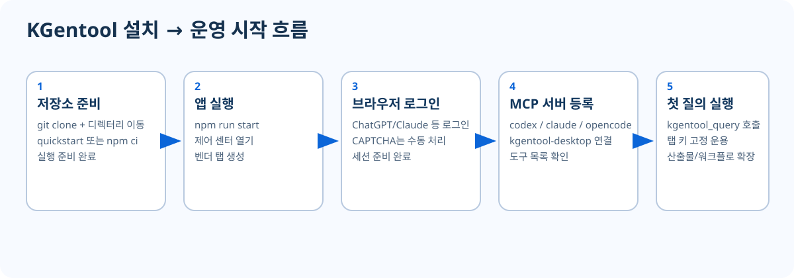
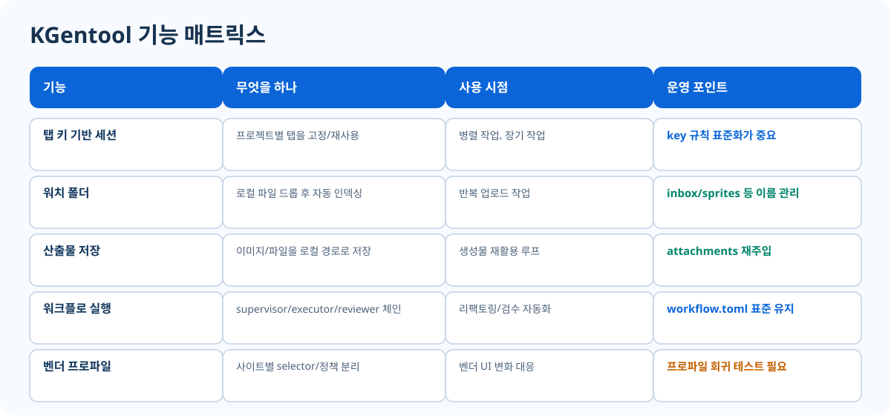

비전공자용 4단계 시작
- 1) 설치: `npm ci` + `npm run start`
- 2) MCP 연결: Codex 또는 Claude Code에 도구 등록
- 3) 첫 질의: `kgentool_query`로 오늘 목표 3개 요청
- 4) 결과 저장: `kgentool_save_artifacts`로 다음 작업에 재사용
목표는 먼저 완벽이 아니라, 5분 안에 첫 호출 성공입니다.
설치 흐름, 기능 매트릭스, 아키텍처를 잘라서 한 장처럼 묶었습니다. 처음 방문한 사람도 제품 범위를 몇 초 안에 파악할 수 있게 구성했습니다.



설치, 실행, MCP 등록, 첫 호출까지 최소 동선 제공
`cpp_refactor_ko`, `vendor_hardening_ko`, `mcp_extension_ko`
이 GitHub Pages가 단일 진입점입니다.
아래 JSON은 터미널 명령이 아니라 MCP 클라이언트 도구 호출 예시입니다.
kgentool_query{
"tool": "kgentool_query",
"arguments": {
"key": "quickstart",
"prompt": "현재 저장소에서 오늘 바로 할 작업 3개를 한국어로 정리해줘."
}
}kgentool_workflow_run{
"tool": "kgentool_workflow_run",
"arguments": {
"workflowName": "cpp_refactor_ko",
"prompt": "C++ 리팩터링 우선순위와 검증 순서를 한국어로 제안해줘."
}
}